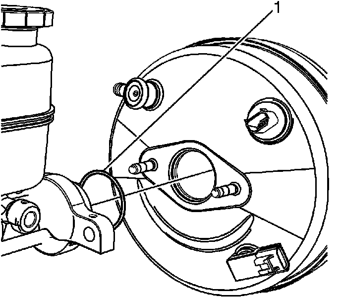

Engine Controls - MIL ON/DTC P0171/P0174 Diagnostics
INFORMATIONBulletin No.: 08-06-04-016
Date: March 06, 2008
Subject:
Diagnostic Information on MIL/SES with DTC P0171 (Fuel Trim System Lean Bank 1) and/or P0174 (Fuel Trim System Lean Bank 2) After Brake Master Cylinder Replacement
Models:
2007-2008 Cadillac Escalade, Escalade ESV, Escalade EXT
2005-2007 Chevrolet Silverado Classic
2007-2008 Chevrolet Avalanche, Silverado, Suburban, Tahoe
2005-2007 GMC Sierra Classic
2007-2008 GMC Sierra, Yukon, Yukon XL, Yukon Denali, Yukon Denali XL
with Vacuum Power Brakes (RPOs JD9, JF3, JF7)
The purpose of this bulletin is to inform dealer technicians to inspect the brake master cylinder seal anytime the brake master cylinder is removed from the vacuum brake booster.

A vehicle may encounter an MIL/SES light set with DTC P0171 (Fuel Trim System Lean Bank 1) and/or P0174 (Fuel Trim System Lean Bank 2) if the seal (1) is damaged or missing. To aid in diagnosis a technician may monitor the Long Term Fuel Trims with a scan tool.
If a lean condition exists block off the vacuum supply line or hose to the brake booster. If the fuel trims return to normal the seal may be damaged or missing.
Prior to removing the brake master cylinder the brake pedal should be applied several times with the engine OFF until the vacuum is depleted from the brake booster. It is possible that the seal could be sucked into the brake booster if the reserve vacuum is not depleted first. Remove the master cylinder and inspect the seal. Refer to Master Cylinder Replacement (JD9, JF3, JF7) in SI.

Disclaimer